Precios accesibles
Nuestros precios están muy por debajo de la competencia
"Vuelve a rodar"
¡Tenemos todo lo necesario para tu carro!
Nuestros precios están muy por debajo de la competencia
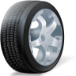
Al adquirir alguna de nuestras llantas nosotros mismos hacemos el reemplazo
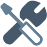
Montaje, balanceo, válvula
No dudes en llamarnos, somos tu mejor opción, ¡La única y mejor llantera en Tihuatlan!
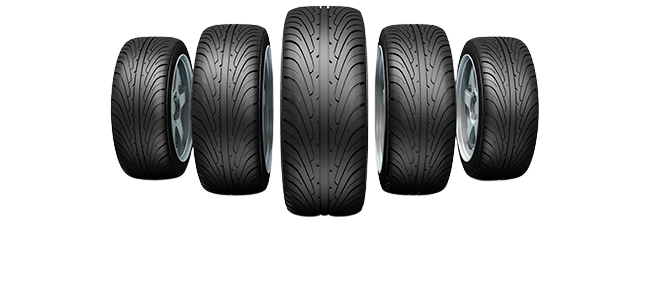
Laterales: Perdida de paralelismo entre ruedas o ejes.
Desgaste ambos laterales: Falta de presión o exceso de carga.
Desgaste irregular: Holgura en la suspensión, dirección, o montaje incorrecto.
Desgaste central: Exceso de presión.
Desgaste concentrado: Por frenar excesivo o avería en el mismo sistema.
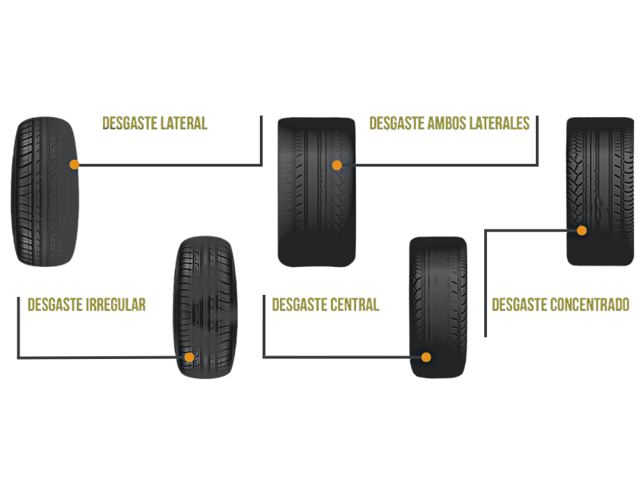

Es la principal fuente de innovación en la industria mundial de las llantas. Destaca como la marca líder a nivel mundial entre las 5 principales empresas de llantas.
Es una compañía multinacional encargada de fabricar neumáticos para automóviles, camiones, coches de carreras, aviones, maquinaria agrícola y maquinaria pesada.
Es una empresa de origen mexicano, desde 2008 propiedad de la compañía india JK Tyre & Industries. Por décadas permaneció como la única empresa mexicana productora de llantas.
Suelen ser resistentes, fuertes y adaptables a cualquier entorno tanto en carretera, terreno como medioambiental.
Crean productos adaptables a los cambios de temperatura y a los habitos de manejo.
Empresa 100% Mexicana dedicada a la formulación, elaboración y comercialización de aceites y grasas lubricantes para uso automotriz e industrial.
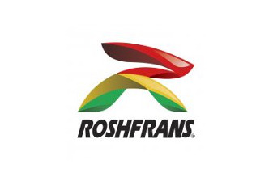
Empresa líder en la venta de llantas para auto y camioneta en la zona occidente del Pais.
Con la llanta Pirelli puedes contar con la calidad y estabilidad que tu vehículo necesita. Realiza tus viajes soñados sin tener que preocuparte si las ruedas son las indicadas.

Queremos que nuestras llantas tengan una vida útil larga y provechosa. Revisa los consejos a continuación para que puedas extender la vida de tus llantas.
La presión de aire incorrecta en las llantas puede ocasionar numerosos problemas, desde el desgaste no uniforme y acelerado de las llantas hasta daños estructurales, pasando por fallas de las llantas y bajo rendimiento de consumo de combustible por kilómetro. Mantener las llantas debidamente infladas puede mejorar dicho rendimiento, permitiéndote ahorrar dinero. Revisa la presión de tus llantas por lo menos una vez al mes y antes de viajes largos.
Llantera Tihuatlan recomienda revisar el inflado de las llantas mensualmente o antes de un viaje largo. Las llantas deben inflarse según las recomendaciones del fabricante del vehículo impresas en la placa de la puerta del conductor o en el manual del propietario del vehículo.
El mantenimiento adecuado del vehículo y de las llantas es una buena inversión porque se traduce en un desempeño óptimo al manejar, ahorros significativos en los costos y un mejor kilometraje del combustible.
Evita girar excesivamente las llantas cuando tu vehículo está en barro o arena. Esto puede causar sobrecalentamiento y daños irreparables en la llanta. Usa un movimiento suave de vaivén para liberar tu vehículo. Nunca te pares cerca o detrás de un neumático que gira a altas velocidades.
La sobrecarga de tu vehículo genera estrés en las llantas y otros componentes críticos del vehículo. Esto también puede causar problemas en el manejo deficiente, mayor consumo de combustible y daños a las llantas. Consulta el manual del propietario de tu vehículo para determinar los límites de carga.
Nunca coloques en tu vehículo llantas nuevas que tengan una capacidad de carga inferior a la recomendada para este, y recuerda que el ancho óptimo del rin es importante para la distribución adecuada de la carga y el funcionamiento correcto de las llantas.
Los hábitos de manejo que causan el mayor desgaste de la llanta son tomar curvas a gran velocidad, arrancar de forma brusca y frenar fuerte. Mantener el pie en el freno al manejar y zigzaguear de un lado al otro también aceleran el desgaste.
Conducir con una llanta con inflado excesivo o insuficiente hace que el neumático desarrolle demasiado calor. Esto provoca que el costado del neumático se flexione excesivamente, resultando en temperaturas operativas más altas y posibles daños estructurales internos. Todo esto podría resultar en una falla de la llanta y provocar daños al vehículo y/o lesiones personales. Para evitarlo, verifica periódicamente el inflado de las llantas y mantén una presión de aire adecuada según se indica en la placa de la puerta del conductor o en el manual de propietario de tu vehículo.
Para una experiencia de manejo más agradable es importante reemplazar las llantas desgastadas. La tracción óptima permite una respuesta ágil al manejo para una conducción suave y confiable.
Las llantas deben revisarse regularmente, como mínimo una vez al mes. Comprueba lo siguiente para determinar si es hora de cambiar sus llantas:
Indicadores de desgaste de la banda de rodamiento: la mayoría de las llantas cuentan con indicadores de desgaste de la banda de rodamiento. Consisten en barras de caucho rígido que solo pueden apreciarse en la llanta cuando la profundidad de su banda de rodamiento se ha desgastado y no llega al límite de conducción segura, que suele ser de 1,6 mm.
Patrón desigual de desgaste: también hay que revisar la banda de rodamiento para verificar si presenta un patrón de desgaste desigual que pueda indicar otros problemas en las llantas o su vehículo.
Presencia de bultos o ampollas en el costado de la llanta.
Estos defectos pueden provocar un fallo de la misma y poner en peligro la seguridad de los ocupantes del vehículo.
Pérdida total del aire a causa de una explosión de la llanta.
Presencia de desgarres u otros daños graves en la llanta.
Presencia de pinchazos de más de 0,64 cm en el costado o la banda de rodamiento. Los pinchazos de mayor profundidad no pueden repararse, y en ningún caso deberán repararse las llantas que se hayan desgastado por debajo de 1,6 mm.
Si deseas ayuda profesional, visita un distribuidor autorizado Goodyear para una inspección gratuita y consejos.
Cambia las cuatro llantas a la misma vez:
Es aconsejable cambiar las cuatro llantas al mismo tiempo. Para obtener un nivel óptimo de control y manipulación, te recomendamos que las cuatro unidades sean del mismo tipo y tamaño a menos que el fabricante del vehículo especifique otra cosa.
Procura que las llantas de reemplazo sean iguales que las que se encuentren instaladas:
Si solo va a comprar dos llantas nuevas, asegúrate de que estas son iguales que las que mantendrá instaladas en el vehículo y de que así lo permita la legislación local y las especificaciones del fabricante del vehículo.
Coloca las llantas nuevas en el eje trasero:
Si solo vas a comprar dos llantas nuevas, colócalas en las ruedas traseras para obtener mejor tracción y estabilidad al conducir.
Nunca mezcles:
No coloques llantas radiales y no radiales en el mismo eje.
Si se han instalado estos dos tipos de llantas en el mismo vehículo, coloque las radiales en el eje trasero.
Verifica la categoría de velocidad de la llanta:
No se recomienda instalar llantas con diferentes categorías de velocidad. Si aun así se hace, deberán instalarse por pares en un mismo eje.
Sigue la recomendación de capacidad de carga:
Procure que las llantas de reemplazo posean una capacidad de carga igual o superior a la especificada por el fabricante de su vehículo.
Busca llantas que sobresalgan en las pruebas de frenado y manejo. El desgaste de la banda de rodamiento, la comodidad al manejar, el ruido y la resistencia al rodar te permiten refinar tus opciones. Escoger una llanta para tu vehículo depende de dónde vives, el clima y el terreno, qué expectativas tienes sobre el desempeño y qué requiere tu vehículo.
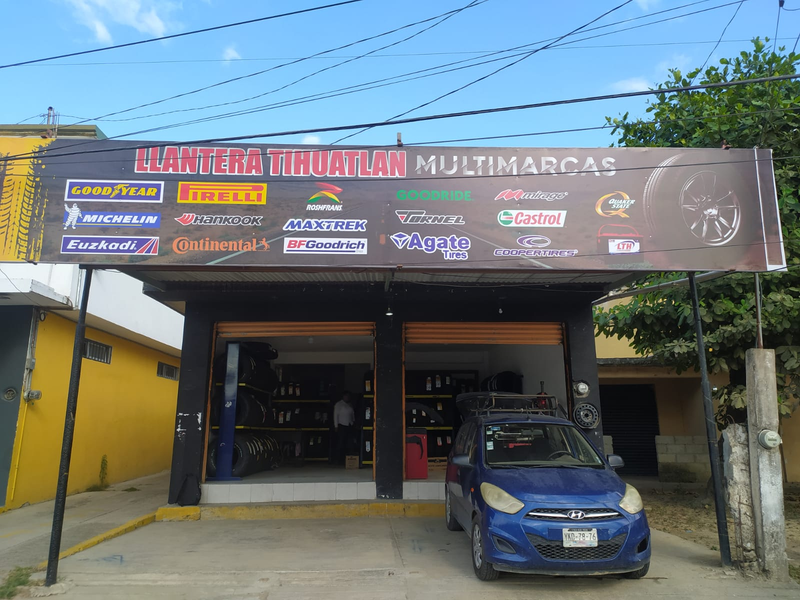
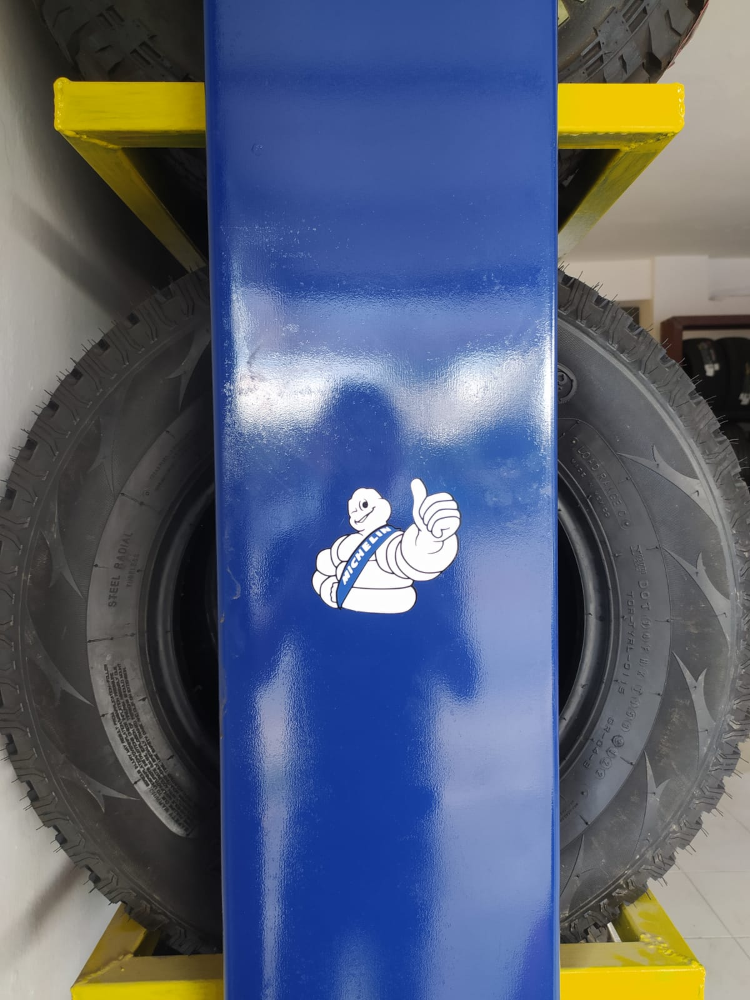
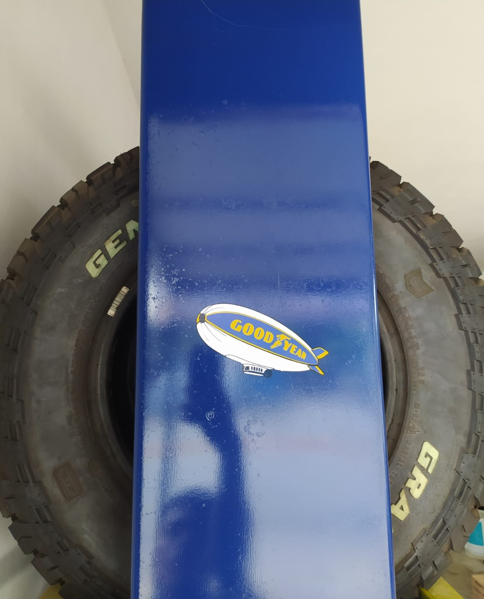
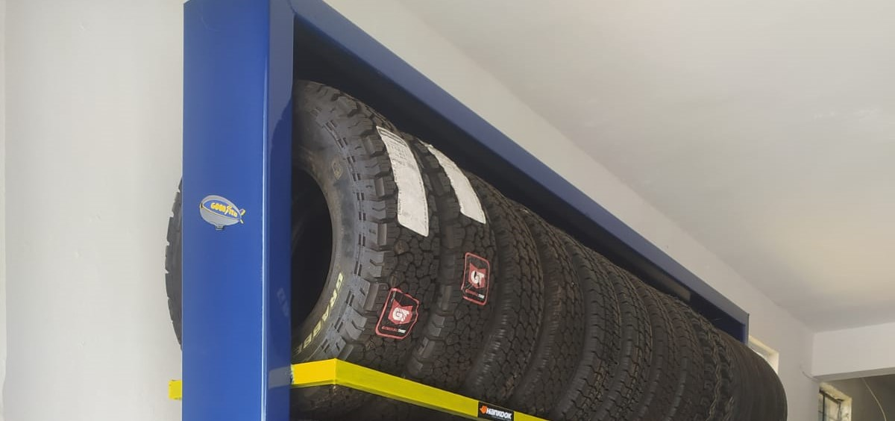
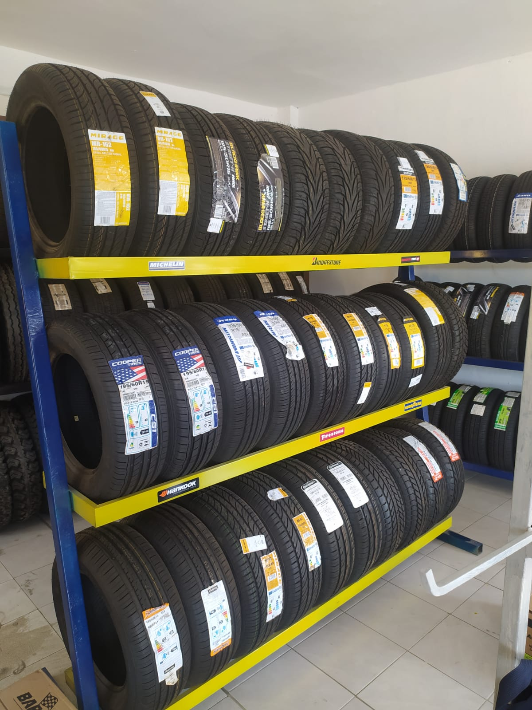
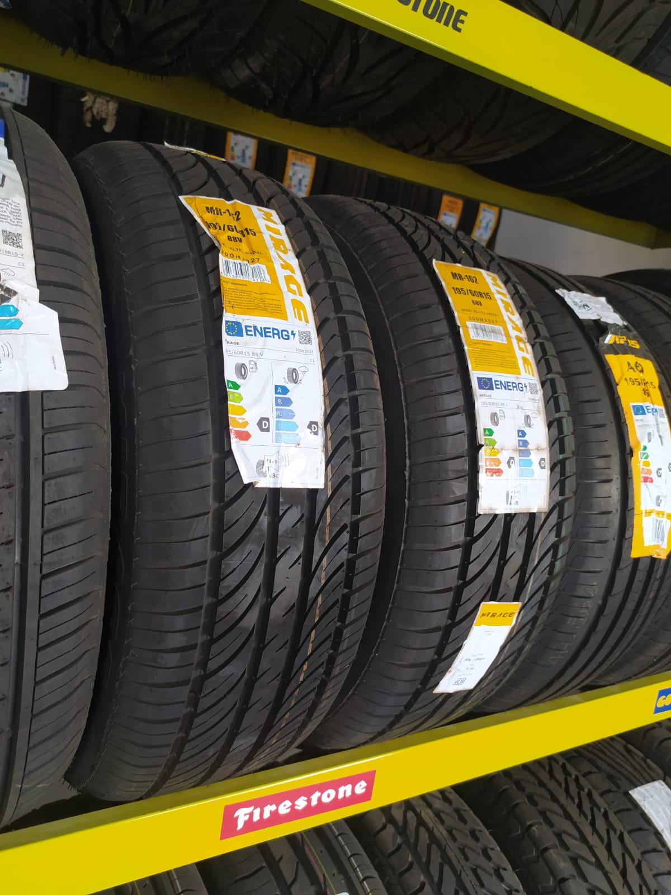
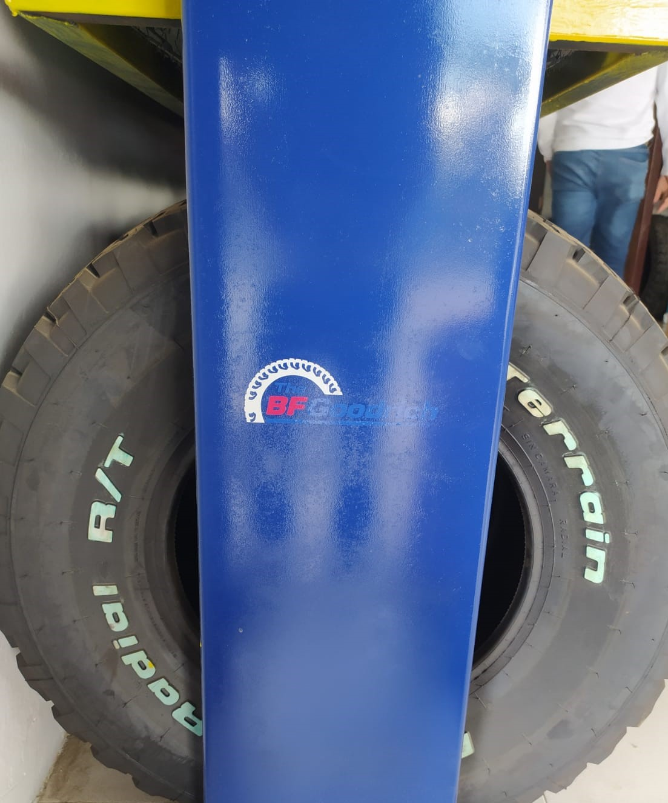
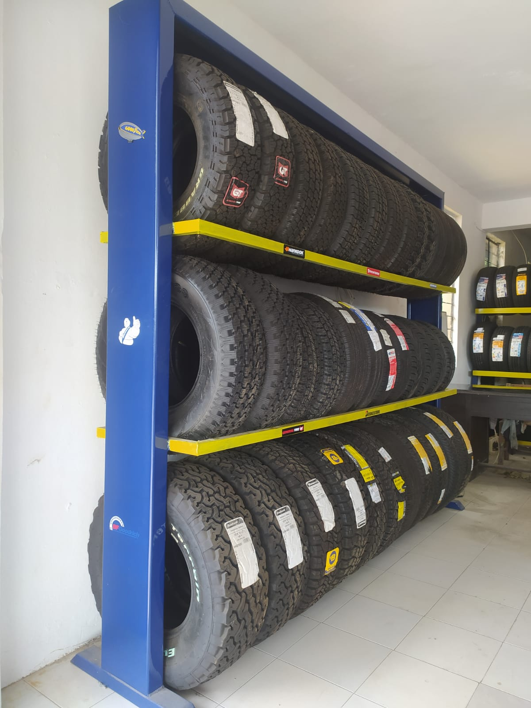
Contador de visitas